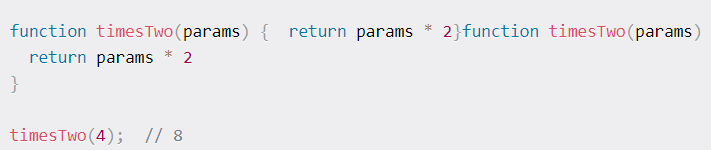
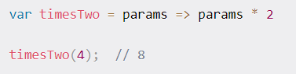

NodeJS Basics
What is NodeJS?
NodeJS is basically a way of running JavaScript code. Before Node, JavaScript could only be applied to web browsers. By integrating a JavaScript engine (Chrome V8) with C++, the JavaScript code can now be applied outside browsers.
Node is ideal for building highly scalable, data-intensive backend & real-time apps.
Being great for prototyping & agile gives Node an advantage over the alternatives, such as Django. Node is fast & used world-wide.
Source code will also be more clean & consistent, as there is JavaScript in both on the frontend & backend.
Note that Node is not a programming language or a framwork. It's a runtime enviroment for execution JavaScript
What do you use Node for?
- Api
- Webiste
- Standalone software
- Servers
- Commandline programs
- Scripts
- Interfaces
To initiate npm, which is the world largest software registry, type npm init
More info about npm can be found here
To escape Node in terminal press CTRL + c twice
To run a file with Node type node **file** in the terminal
You can also install nodemon, which is a tool that helps in the development-stage of an application. As soon as you write any new code, it automatically reruns the application
Be aware, that you should never use nodemon, when publishing an application
You install nodemon through the terminal with the following command: npm install -g nodemon. The -g means, its installed globally
You can also use budo, if you just want to LiveReload your html pages, as you're writing them, including CSS injections
This makes prototyping very fast and easy. To install budo: npm install budo -g
You could also just use budo one time, in which case you write npx budo index.html --live --open
Modules
Modules are a fundamental part of NodeJS. Some modules are available globally, which means that we don't have to do anything to use them. In order to import modules, the function, *require()* is used in the app.js file.
An example of this is the console.log()
You can consider modules as a set of functions you want to include in your app
Arrow functions vs functions
Below is an example of arrow functions vs regular functions
Regular function

Arrow function

As you can see, the arrow function is much shorter to write.
Furthermore, arrow functions don't have their own this or arguments binding. Instead, those identifiers are resolved in the lexical scope like any other variable. That means that inside an arrow function, this and arguments refer to the values of this and arguments in the environment the arrow function is defined in (i.e. "outside" the arrow function)
The text above is taken from stackoverflow: Link
Packages
First, you need an empty package.json file in ur directory
To install a package, go to the right folder in the terminal, and write npm install **packagename**
Express is a library for building API from npm.
Express.js is a node web application framework, which is made for building: single-page, multi-page* & hybrid web applications. Is is the standard Server Framework for Node.js.
To install express, write npm install express